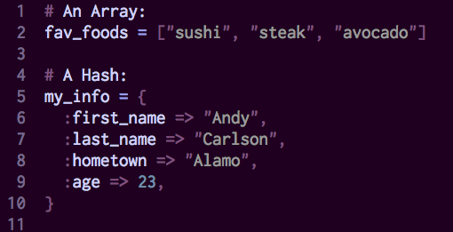

Ruby Data Structures
Arrays vs. Hashes
Feb 16, 2015
Ruby has objects similar to other object-oriented programming languages: numbers, strings, and booleans. Two of the container objects I want to talk about in this post are arrays and hashes! Imagine an array as a stack of papers. On each paper is an object. It can be an integer, string, or even an array! Each page in the stack can be easily referenced by its page number, denoted by an integer. Think of an array as an ordered list.
An example of an array and a hash.
Hashes are a bit more conceptually complex, but very analogous. Now imagine a stack of folders, each with only one page within it. These folders have a tab at the top on which any object can be written. It's similar to an array, but instead of these contents being referenced by an integer, or page number, it can be referenced by any object, or "key". Prior to Ruby 1.9, hases were not ordered, like arrays. However, now hashes are ordered by default in the same sequence which they are entered.
Arrays are convenient because they can be sorted. However, inserting into sorted arrays is expensive, requiring O(n) time. Inserting into hashes is much more efficient! So if your task requires far more insertions than look-ups, maybe a hash is more suitable for the job!